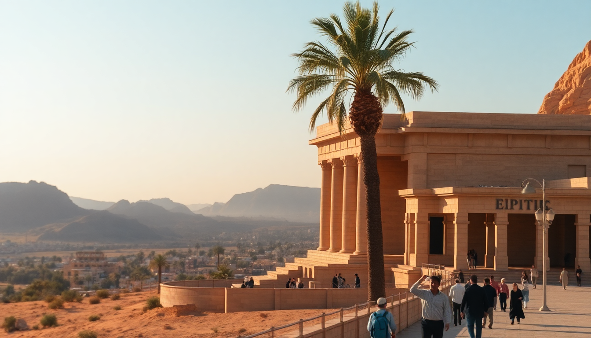

Best Time to Visit Egypt: Month-by-Month Guide for 2025

I’ve been to Egypt three times now — once in blistering July, once in the sweet spot of November, and once in the chaos of Easter week. Each trip taught me something different about timing. This guide breaks down every month of 2025, so you know exactly when to book that Nile cruise, when to brave the Valley of the Kings, and when to avoid Cairo entirely.
When is the absolute best time to visit Egypt in 2025?
For my money, November is the perfect month. We spent two weeks bouncing between Cairo, Luxor, and Aswan, and the weather was almost boringly good — high 70s°F (low 20s°C) in Luxor, crisp mornings in Giza, and zero rain. Crowds at the Egyptian Museum and Karnak Temple were manageable, not shoulder-to-shoulder. Hotel rates at places like Steigenberger Hotel El Tahrir in Cairo were reasonable, and we booked a Nile cruise from Luxor to Aswan through a local operator without any last-minute panic.
- November is the sweet spot: comfortable temps, low humidity, moderate prices.
- October and March are close runners-up, but October can still feel hot in Luxor (mid-90s°F).
- December through February are cool and dry, but expect bigger crowds at Abu Simbel and Valley of the Kings.
- Avoid June through August unless you’re heading to Sharm el-Sheikh for diving — Cairo and Luxor become ovens.
What’s Cairo like month by month?
Cairo is a year-round city, but your enjoyment depends heavily on the season. In January, we walked around Khan el-Khalili bazaar in a light jacket — it’s chilly at night, hitting lows around 50°F (10°C). The Giza Plateau was empty-ish at sunrise, which was a win. By April, dust storms (khamsin) can roll in, making the air hazy and your photos of the pyramids look washed out.
June through August is brutal. I did Cairo in July once, and by 10 a.m. the heat at the Great Pyramid was oppressive. The Museum of Islamic Art was a lifesaver — air-conditioned and nearly empty. September is still hot but crowds thin out after European summer. December brings locals and holiday travelers; we waited 45 minutes for tickets at the Citadel of Saladin, but the views over the city were worth it.
- January–February: Cool, cheap hotels like The Nile Ritz-Carlton drop rates. Pack layers.
- March–April: Moderate temps but risk of dust storms. Good for budget travelers.
- May–September: Hot to very hot. Use early morning visits to Pyramids of Giza and Sphinx.
- October–December: Ideal weather returns. Book GetYourGuide tours for the Grand Egyptian Museum (opening fully in 2025) well ahead.
How does Luxor change throughout the year?
Luxor is a desert city, so it’s either hot or very hot, with a brief cool window. In January, we visited the Valley of the Kings at 7 a.m. and needed a fleece — it was 55°F (13°C). By noon, it hit a pleasant 75°F (24°C). Perfect for exploring Medinet Habu and Colossi of Memnon without sweating through your shirt.
May and June are punishing. I watched a tourist nearly faint at Karnak Temple in late May — the stone radiates heat. If you go then, hire a guide who knows the shaded routes and bring a misting fan. October is the real comeback month. We stayed at Hilton Luxor Resort & Spa and used their pool every afternoon after morning temple runs.
- November–February: Peak season in Luxor. Book Sofitel Winter Palace Luxor months in advance.
- March–April: Warm days, cool nights. Good for hot air balloon rides over the West Bank.
- May–September: Scorching. Stick to sunrise visits at Temple of Hatshepsut and Ramesseum.
- October: Shoulder season with fewer crowds at Luxor Temple at night.
What about Aswan — when should I go?
Aswan is Egypt’s southernmost city, and it’s consistently hotter than Cairo or Luxor. I went in February and found it perfect — highs around 80°F (27°C), lows in the 60s. We took a felucca ride on the Nile at sunset, and the breeze made it feel like spring. The Nubian Museum was quiet, and we ate at El-Masry Restaurant without a wait.
Summer in Aswan is no joke. July and August push 105°F (41°C). The Temple of Philae was nearly empty when we visited in August, but we had to reapply sunscreen every hour. December is busy but bearable — we saw the Unfinished Obelisk with a small group, no jostling. If you’re doing a Nile cruise from Aswan to Luxor, aim for October through March; the boats are less crowded and the top decks are usable.
- October–March: Best weather for Abu Simbel day trips (book through a tour, not solo).
- April–May: Hot but tolerable. Stay at Basma Hotel Aswan for its pool overlooking the Nile.
- June–September: Only for heat lovers. Use early morning for Kitchener’s Island botanical garden.
- November–February: High season. Book Mövenpick Resort Aswan early.
FAQ
Is Egypt too hot in summer for sightseeing? Yes, for most people. Cairo and Luxor regularly hit 100°F+ (38°C) in July and August. If you go, plan all outdoor activities before 10 a.m. and after 4 p.m. I spent afternoons in air-conditioned museums like the National Museum of Egyptian Civilization in Cairo. Hurghada and Sharm el-Sheikh are more bearable due to sea breezes.
When are the worst crowds in Egypt? Christmas, New Year’s, and Easter week are chaotic. I was in Luxor during Easter 2023, and the Valley of the Kings had 90-minute lines for Tutankhamun’s tomb. Chinese National Day (first week of October) also brings large tour groups. For smaller crowds, target mid-January or late November.
Can I swim in the Red Sea year-round? Yes. Water temps in Hurghada and Sharm el-Sheikh range from 72°F (22°C) in January to 84°F (29°C) in August. I’ve snorkeled at Ras Mohammed National Park in February and seen the same coral and fish as in July. The best visibility is in spring and fall.
Conclusion
- November is the single best month: great weather, moderate crowds, fair prices across Cairo, Luxor, and Aswan.
- October and March are excellent alternatives if you want slightly lower rates.
- June through August is for Red Sea divers only — skip the Nile Valley entirely.
- December through February is busy but comfortable; book hotels like Mena House in Giza or Sofitel Winter Palace in Luxor as early as possible.
- April and May offer good deals but risk dust storms and rising heat — bring a scarf and plan indoor backups.